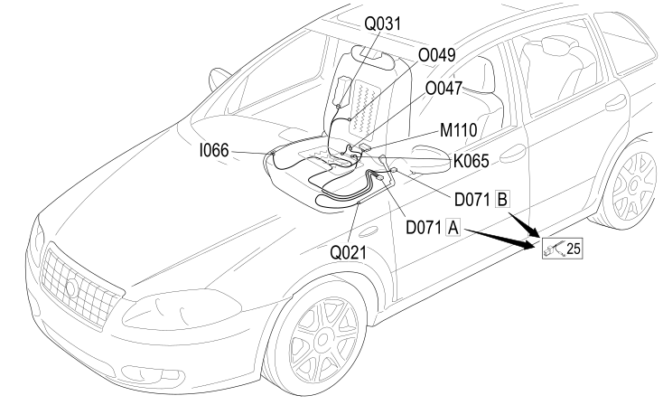

37 RIGHT SEAT
- Path
- Electrical equipment > 2 WIRING > 37 RIGHT SEAT
- Kind
- wiring harness
- Applies to
- all engines; all production periods; only with equipment: HEATED FRONT SEAT
- Interactive page
- https://sloeber94.github.io/elrnDB-fCrm/en/#/194001828
Applies to: all engines; all production periods; only with equipment: HEATED FRONT SEAT

Topics that link to this page (15)
- D071A PASSENGER SEAT COUPLING (RIGHT SEAT)
- D071B PASSENGER SEAT COUPLING (RIGHT SEAT)
- I066 PASSENGER SEAT HEATING SWITCH (RIGHT SEAT)
- K065 PASSENGER PRESENCE SENSOR (RIGHT SEAT)
- M110 FRONT PASSENGER SEAT HEATER CONTROL UNIT (RIGHT SEAT)
- M175A PASSENGER ALIGNMENT NODE (RIGHT SEAT)
- M175B PASSENGER ALIGNMENT NODE (RIGHT SEAT)
- N128 PASSENGER SEAT LIFT MOTOR (RIGHT SEAT)
- N129 RIGHT FRONT SEAT FRONT HEIGHT ADJUSTMENT MOTOR (RIGHT SEAT)
- N130 PASSENGER SIDE SEAT SLIDE ADJUSTMENT MOTOR (RIGHT SEAT)
- N135 PASSENGER SEAT BACKREST ADJUSTMENT MOTOR (RIGHT SEAT)
- O047 RIGHT FRONT SEAT HEATER PAD WITH SENSOR (RIGHT SEAT)
- O049 RIGHT FRONT BACKREST HEATER PAD (RIGHT SEAT)
- Q021 PASSENGER SIDE FRONT BELT PRETENSIONER (RIGHT SEAT)
- Q031 PASSENGER SIDEBAG (RIGHT SEAT)